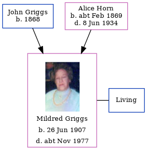

Mildred Sylvia Holmes (née Griggs) 1907 - c1977
[ Home ] | [ Calendar ] | [ Surnames Index ] | [ Family History ]The youngest of 8 children of John Griggs (a general laborer) and Alice HornMildred Griggs, the second cousin twice-removed on the father's side of Nigel Horne, was born in Thanet, Kent, England on Jun 26, 19071,2. She married Walter C F Holmes in Thanet around Nov 19283.
Throughout her life, she lived at 103 Milton Road, Margate, Kent, England on Apr 2, 19114 and in 1915.
She died c. Nov 1977 in New Forest, Hampshire, England2.
Parents
- John Edward was born in 1868
- Alice Clara was born c. Feb 1869
Citations
- England & Wales births 1837-2006 - Findmypast
- England & Wales deaths 1837-2007 - Findmypast
- England & Wales Marriages 1837-2005 - Findmypast
- 1911 Census for England & Wales - Findmypast (was age 3 and the daughter of the head of the household)
Media
Mildred Sylvia Griggs

England & Wales births 1837-2006 - BMD/B/1907/3/AZ/000241/196
England & Wales marriages 1837-2005 - BMD/M/1928/4/AZ/000461/037
1911 Census for England & Wales - GBC/1911/RG14/04491/0387/7
England & Wales deaths 1837-2007 - BMD/D/1977/4/AZ/000514/155
Family Tree
Generated by ged2site. Last updated on Nov 13, 2024